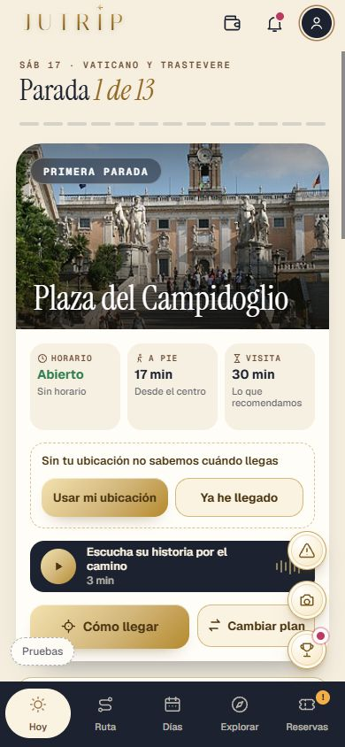

V47 · La tarjeta de la parada, antes de llegar y al llegar
Capturas en modo iPhone. No se ha pasado ninguna prueba (tanda de pruebas esta noche); solo npm run build sin errores y estas capturas. Detalle en docs/dias/DECISIONES_V47.md.
Qué ha cambiado
Antes de llegar: tres cajas en una fila: HORARIO (según la hora real), A PIE / EN COCHE («Desde el alojamiento», «Desde el Panteón», «Desde ti») y VISITA («Lo que recomendamos»). Debajo, el recuadro de la ubicación, la historia y los botones.
Al llegar: las mismas tres cajas («Aquí · Ya has llegado»), la franja «AQUÍ GANAS 1 PEDAZO» con el trozo de ese sitio, y tres botones con nombre: Qué ver, Escuchar historia y Hacer foto (dorado).
La foto de los Museos Vaticanos en la «Plaza del Campidoglio» (captura de la V46): venía de mi montaje, no de la app: cambié solo el nombre de una parada y su foto (guardada en su propio campo) se quedó. Una parada nunca coge la foto por el nombre de otra.
Antes de llegar
375 px, el caso más largo: cerrado ahora y sin ubicación. Caben las tres cajas sin cortar texto.

Una plaza sin horario: «Abierto · Sin horario».
Al llegar
«Ya estás aquí»: tres cajas, franja del pedazo con su trozo y tres botones con nombre.
Tu lista de comprobación
Primera parada cerrada ahora: HORARIO en negro con «Cerrado ahora · abre a las…» en rojo, sin cortar a 375 px.
Una plaza: «Abierto» en verde y «Sin horario».
«Desde el alojamiento» en la primera parada y «Desde el Panteón» en las demás.
Al llegar: «Aquí · Ya has llegado», la franja dorada con el trozo del sitio y [Qué ver] [Escuchar historia] [Hacer foto].
Después del cierre: «Cerrado · abre mañana a las…» (no visto en pantalla).
No he podido comprobar
Ninguna prueba (por tu orden). No he visto en pantalla «Cerrado · abre mañana…» ni «Desde el Panteón». Pruebas viejas que esperaban lo de antes fallarán hasta la tanda de pruebas; pruebaV2Hoy sigue con su fallo.